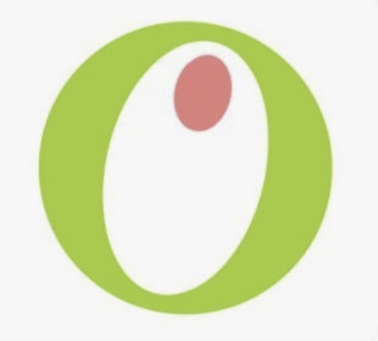

대기 중 (ONLINE)
FACE DETECTED

스킨케어 고민을 1대1 전문 상담원과 이야기하듯
편안하게 대화로 분석받고 처방받으세요.
진단 카메라를 활성화하는 중입니다...
카메라가 없는 경우 가상 진단 모드로 대체 구동됩니다.정면을 향해 주시고,
턱과 이마를 가이드라인에 맞춰주세요.
상담을 통해 추천받은 제품을 클릭하거나, 제품을 선택하면 현재 위치에서 해당 상품이 진열된 매대까지 동선이 지도에 실시간으로 표시됩니다.
남성 스킨케어 코너에 위치한 제품입니다. AI 부스 바로 뒤편 왼쪽 통로를 지나 C구역 정면 5번 매대로 이동해 주세요.
민감성 피부를 위해 주의해야 할 성분이 포함되어 있는지, EWG 그린 등급의 성분 구성인지 실시간 데이터베이스를 바탕으로 꼼꼼하게 점검합니다.
| 성분명 (English/Korean) | EWG 등급 | 주요 배합 목적 및 안전성 정보 |
|---|
진단 결과 및 추천 상품 목록, 매장 내 상세 진열 위치가 적힌 스마트 영수증을 출력합니다. 모바일 올리브영 앱과 연동할 수 있는 바코드도 포함되어 있습니다.
2026.06.04 13:25:03 | NO. 49023
매장 하단 토출구에서 티켓을 가져가신 뒤 매대를 찾아가 보시기 바랍니다.